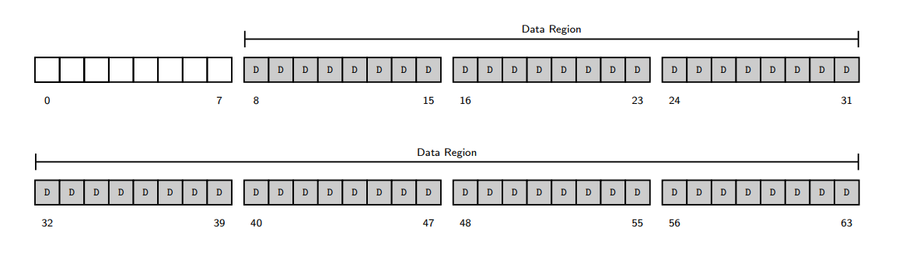

1. Warm-up
1.1 文件系统测量总结（File System Measurement Summary）
- Most files are small
- 大多数文件很小（常见大小为2KB）。
- Average file size is growing
- 平均文件大小增长（约200KB）。
- Most bytes are stored in large files
- 大部分存储空间被少数大文件占用。
- File systems contain lots of files
- 文件系统平均包含约10万个文件。
- File systems are roughly half full
- 磁盘利用率通常为50%。
- Directories are typically small
- 目录通常很小（多数条目≤20个）。
1.2 文件大小与空间占用（Size of A File）
| 文件名 | 内容（重复行） | 实际大小 | 占用空间 |
|---|---|---|---|
test1 |
- | 0字节 | 0字节 |
test2 |
1行 | 22字节 | 0字节 |
test3 |
40行 | 878字节 | 4KB |
test4 |
1行 | 22字节 | 4KB |
- 关键点：文件系统按块（如4KB）分配空间，导致小文件可能浪费空间（内部碎片）。
2. Typical File System
2.1 极简文件系统（VSFS: Very Simple File System）
- 磁盘组织（Overall Organization）
- 磁盘分为固定大小的块（如4KB），假设总块数为64。
- 数据区域（Data Region）：占用最后56块（如块8-63）。
- 
- Inode表：占用5块（如块2-6）
- 如果每个Inode 256字节，最多存储
(5×4KB)/256B = 80个Inode。- This number represents the maximum number of files we can have in our file system.
- 位图（Bitmap）：
- 位图是由一系列二进制位（bit）组成的数组，每个位代表一个特定资源（如磁盘块或inode）的分配状态。
- Inode位图（inode bitmap）：标记Inode是否空闲（1块）。
- 数据位图（data bitmap）：标记数据块是否空闲（1块）。
- 超级块（Superblock）
- 它包含有关此特定文件系统的信息，例如，文件系统中有多少索引节点（inode）和数据块、索引节点表从何处开始等等。
- 挂载文件系统时，操作系统会首先读取超级块（superblock）。
2.2 Inode结构（File Organization: the Inode）
- 多级索引（Multi-Level Index）：
- 直接指针：每个指针指向属于该文件的一个磁盘块。
- 间接指针：Instead of pointing to a block that contains user data, it points to a block that contains more pointers, each of which point to user data.
- To support even larger files, by adding a
- double indirect pointer
- What is the maximum size, with 12 direct pointers, 1 indirect pointer, 1 double indirect pointer
- double indirect pointer
- triple indirect pointer
- What is the maximum size, with 12 direct pointers, 1 indirect pointer, 1 double indirect pointer, 1 triple indirect pointer
- 或者，通过使用盘区（extent）而非指针（如 ext4 文件系统）。
- 一个盘区仅包含一个磁盘指针和一个长度（以块为单位），用于指定文件在磁盘上的存储位置。
- 基于盘区的文件系统通常允许存在多个盘区。
- 灵活性较低，但更紧凑。
2.3 分配方法（Allocation Method）
FAT (File-Allocation Table)
NTFS
分配方法（重要！）
| 方法 | 描述 | 示例文件系统 |
|---|---|---|
| 连续分配 Contiguous allocation | 文件占用连续的磁盘块 | ext4, NTFS |
| 链式分配 Linked allocation | 文件通过链表链接分散的块 | FAT |
| 索引分配 Indexed allocation | 使用索引块集中管理指针 | ext2/ext3 |
- 连续分配（Contiguous Allocation）
- 原理：文件的所有数据块在磁盘上物理连续存储（如一个文件占用块5-9）。
- 文件元数据只需记录起始块地址和长度即可定位全部数据。
- 优点：
- 读写性能高：连续存储减少磁头移动（适合HDD）。
- 实现简单：只需维护起始位置和长度。
- 缺点：
- 外部碎片：频繁创建/删除文件会导致空闲块分散，难以分配大文件。
- 扩容困难：文件增长时可能需要整体移动。
- 应用文件系统：
ext4（支持预分配以减少碎片）、NTFS（对连续大文件优化）。
- 原理：文件的所有数据块在磁盘上物理连续存储（如一个文件占用块5-9）。
- 链式分配（Linked Allocation）
- 原理： 文件的每个数据块包含指向下一个块的指针，形成链表结构。
- 文件元数据只需记录首块地址，通过遍历链表访问全部数据。
- 优点：
- 无外部碎片：空闲块可分散利用。
- 动态扩容：文件增长时只需追加新块。
- 缺点：
- 随机访问慢：必须从头遍历链表。
- 空间开销：每个块需存储指针，降低有效存储容量。
- 可靠性风险：指针损坏会导致数据丢失。
- 应用文件系统：
FAT（File Allocation Table）：实际通过FAT表集中存储指针链，而非在块中直接存储，但逻辑仍属链式分配。
- 原理： 文件的每个数据块包含指向下一个块的指针，形成链表结构。
- 索引分配（Indexed Allocation）
- 原理：为每个文件分配一个索引块（index block），集中存储该文件所有数据块的指针。
- 文件元数据指向索引块，索引块中的指针直接定位数据块。
- 优点：
- 支持快速随机访问：通过索引块直接跳转到目标数据块。
- 无外部碎片：数据块可分散存储。
- 缺点：
- 小文件空间浪费：即使文件很小，也需占用整个索引块。
- 大文件需扩展：若索引块指针不足，需多级索引（如ext2的间接块）。
- 应用文件系统：
ext2/ext3：采用多级索引（直接、一级间接、二级间接指针）。- 现代文件系统（如
ext4）结合索引与扩展机制（如Extents）。
- 原理：为每个文件分配一个索引块（index block），集中存储该文件所有数据块的指针。
In Class Exercise
Answer
注意！每个indices是4B，这些indices可能在inode中（直接的），也可能在存储间接block的块中。间接block占一个sector，故一个间接block中有512/4个指向其他块的指针/indices
2.4 目录组织（Directory Organization）
- A directory basically contains a list of
(entry name, inode number)pairs - 删除文件（例如调用unlink()函数）可能会在目录中间留下空白空间，因此需要某种方式对此进行标记（例如使用保留的索引节点号，如0）。
- 这种删除操作正是使用记录长度（reclen）的原因之一：新条目可能会重用旧的、更大的条目，从而在其中留有额外空间。
- 目录拥有一个索引节点（inode），该节点位于索引节点表中的某个位置（其inode的类型字段标记为“目录”而非“普通文件”）。
2.5 访问路径（Access Paths）
- 读取文件
/foo/bar：- 读取根目录
/的Inode和数据块，找到foo的Inode号。 - 读取
foo的Inode和数据块，找到bar的Inode号。 - 读取
bar的Inode和数据块。
- 读取根目录
- 写入文件：需额外更新位图和Inode（每次写入可能触发5次I/O）。
3. Fast File System (FFS)
3.1 性能问题与优化
- 原始问题：
- 数据块分散导致寻道时间长。
- 块大小过小（512字节）。
- 解决方案：
- 块组（Block Groups）：将磁盘划分为多个组，每组包含完整文件系统结构（超级块、位图、Inode表、数据块）。
- 局部性策略：
- 同一目录下的文件放在同一组。
- 大文件分散到不同组（避免占满单个组）。
3.2 示例对比
- 普通文件系统：文件分散存储，导致长寻道。
- FFS：
| 组号 | Inode | 数据块 |
|---|---|---|
| 0 | /, a |
/, a |
| 1 | b, c |
b, c |
- 目录
/a及其文件c、d、e集中在同一组。
4. FSCK and Journaling
4.1 崩溃一致性问题（Crash-Consistency Problem）
- 场景：更新文件需写Inode、位图、数据块，若崩溃发生在部分写入后，会导致不一致。
- 例如：仅写入数据块（
Db），其他未更新 → 无问题。 - 仅写入Inode（
I[v2]）→ 元数据不一致（位图未标记块已用）。
- 例如：仅写入数据块（
4.2 解决方案
- Fsck（File System Checker）：
- 扫描磁盘修复不一致（如重建位图、清除损坏Inode）。
- 缺点：速度慢（需扫描整个磁盘）。
- 日志（Journaling）：
- 日志写入：将事务（TxB、元数据、数据、TxE）写入日志区。
- 提交：写入TxE标记事务完成。
- 检查点：将日志中的更新写入实际位置。
- 元数据日志：仅记录元数据（不记录数据块），减少写入量。
4.3 日志优化
- 批处理（Batching）：合并多个事务写入日志。
- 循环日志（Finite Log）：通过日志超级块标记空闲事务。
4.4 日志模式（Journaling Modes）
-
Data Journaling（数据日志）
- 日志中记录完整事务（包括数据块），确保崩溃后完全恢复。
- 缺点：数据需写入两次（日志+实际位置），性能开销大。
| Journal | TxB | I[v2] | B[v2] | Db | TxE | → Checkpoint: I[v2], B[v2], Db | -
Metadata Journaling（元数据日志）
- 仅记录元数据（Inode、位图），数据块直接写入最终位置。
- 有序模式（Ordered）：
- 数据块先写入最终位置。
- 元数据事务提交到日志。
- 检查点更新元数据。
- 无序模式（Unordered）：允许数据块和元数据乱序写入（风险更高）。
4.5 块重用问题（Block Reuse）
- 场景：
- 文件A占用块1000，后删除。
- 文件B重用块1000，但崩溃时日志中残留文件A的旧事务。
- 风险：恢复时可能错误地将旧数据写入新文件。
- 解决方案：
- 延迟重用：直到删除操作完成检查点后才允许重用块。
- 撤销记录（Revoke）：在日志中标记块不可回放（ext3采用）。
4.6 其他方法：写时复制（Copy-on-Write, COW）
- 原理：更新时不覆盖旧数据，而是写入新位置（如日志结构文件系统LFS）。
- 优点：避免崩溃一致性问题，简化恢复流程。
5. 关键概念总结
| 概念 | 描述 |
|---|---|
| Inode | 文件控制块，包含元数据和数据块指针（直接/间接）。 |
| 多级索引 | 通过间接指针支持大文件（计算最大文件大小需考虑块大小和指针大小）。 |
| FFS块组 | 将磁盘分组，提升局部性（同一目录文件放同组，大文件分散存储）。 |
| Fsck | 扫描修复不一致，但速度慢（如重建位图、清除损坏Inode）。 |
| 日志（Journaling） | 先记录事务到日志，再提交到实际位置（确保崩溃后可恢复）。 |
| 数据 vs 元数据日志 | 数据日志更安全但性能差；元数据日志需有序写入数据块。 |
6. 示例与计算
6.1 最大文件大小计算
- 假设：
- 块大小 = 4KB，指针大小 = 4B
- Inode包含：12直接指针 + 1间接指针 + 1双重间接指针 + 1三重间接指针
- 计算：
- 直接块：
- 间接块：
- 双重间接：
- 三重间接：
- 总计：~4TB（实际受限于Inode字段位数）。
6.2 文件创建的I/O操作
- 步骤：
- 读取Inode位图（找空闲Inode）。
- 写入Inode位图（标记占用）。
- 初始化Inode。
- 写入目录数据块（添加文件名到Inode的映射）。
- 更新目录Inode。
- 总I/O次数：6次（若目录需扩展，额外操作更多）。
1. Log-Structured File System (LFS)
1.1 Observations (观察)
- System memories are growing (系统内存增长)
- As more data is cached in memory, disk traffic increasingly consists of writes, as reads are serviced by the cache.
（随着更多数据缓存在内存中，磁盘流量主要由写入构成，因为读取由缓存服务。）
- As more data is cached in memory, disk traffic increasingly consists of writes, as reads are serviced by the cache.
- Large gap between random I/O and sequential I/O performance (随机I/O与顺序I/O性能差距大)
- Hard-drive transfer bandwidth has increased, but seek and rotational delay costs decrease slowly.
（硬盘传输带宽提升，但寻道和旋转延迟成本降低缓慢。）
- Hard-drive transfer bandwidth has increased, but seek and rotational delay costs decrease slowly.
- Existing file systems perform poorly on common workloads (现有文件系统在常见负载下表现不佳)
- Even FFS incurs many short seeks and rotational delays.
（即使FFS也会产生大量短寻道和旋转延迟。）
- Even FFS incurs many short seeks and rotational delays.
- File systems are not RAID-aware (文件系统未针对RAID优化)
- Small writes problem in RAID-4 and RAID-5.
（RAID-4和RAID-5中的小写入问题。）
- Small writes problem in RAID-4 and RAID-5.
1.2 LFS Core Idea (核心思想)
- Buffer all updates in memory segments, then write sequentially to disk (将更新缓存在内存段中，然后顺序写入磁盘)
- Segments are written to free locations, never overwriting existing data.
（段写入空闲位置，永不覆盖现有数据。）
- Segments are written to free locations, never overwriting existing data.
- Achieves high performance by transforming writes into sequential operations.
（通过将写入转为顺序操作实现高性能。）
1.3 Key Mechanisms (关键机制)
- Inode Map (imap) (inode映射表)
- Indirect mapping between inode numbers and disk locations.
（inode编号与磁盘位置的间接映射。）
- Indirect mapping between inode numbers and disk locations.
- Checkpoint Region (CR) (检查点区域)
- Fixed location storing pointers to the imap, updated periodically.
（固定位置存储指向imap的指针，定期更新。）
- Fixed location storing pointers to the imap, updated periodically.
- Garbage Collection (垃圾回收)
- Compacts live data by reclaiming dead blocks (e.g., via segment summary blocks).
（通过回收无效块压缩有效数据，如通过段摘要块。）
- Compacts live data by reclaiming dead blocks (e.g., via segment summary blocks).
1.4 Crash Recovery (崩溃恢复)
- Uses a log structure with two checkpoint regions for atomic updates.
（使用日志结构和双检查点区域实现原子更新。） - Roll-forward mechanism to recover from partial writes.
（通过前滚机制恢复部分写入。）
2. Flash-based SSDs
2.1 Advantages (优势)
- Fast (no mechanical parts) and non-volatile.
（快速（无机械部件）且非易失性。）
2.2 Challenges (挑战)
- Erase-before-write (写前需擦除)
- Must erase entire blocks (128–256 KB) before programming pages (4 KB).
（编程页前需擦除整个块。）
- Must erase entire blocks (128–256 KB) before programming pages (4 KB).
- Wear-out (磨损)
- Limited Program/Erase (P/E) cycles (e.g., 10k for MLC, 100k for SLC).
（有限的擦写周期，如MLC 1万次，SLC 10万次。）
- Limited Program/Erase (P/E) cycles (e.g., 10k for MLC, 100k for SLC).
2.3 Flash Operations (操作)
- Read (a page): Fast random access (~25–75 μs).
（读取（页）：快速随机访问。） - Erase (a block): Slow (~200–1350 μs).
（擦除（块）：慢速。） - Program (a page): Moderate (~1500–4500 μs).
（编程（页）：中等速度。）
2.4 Flash Translation Layer (FTL) (闪存转换层)
- Log-Structured FTL (日志结构FTL)
- Maps logical writes to sequential physical writes, similar to LFS.
（将逻辑写入映射为顺序物理写入。）
- Maps logical writes to sequential physical writes, similar to LFS.
- Garbage Collection (垃圾回收)
- Reclaims blocks with dead pages by copying live data to new blocks.
（通过复制有效数据到新块回收无效块。）
- Reclaims blocks with dead pages by copying live data to new blocks.
- Hybrid Mapping (混合映射)
- Combines block-level and page-level mapping for efficiency.
（结合块级和页级映射以提高效率。）
- Combines block-level and page-level mapping for efficiency.
2.5 Performance (性能)
- SSDs outperform HDDs in random I/O (e.g., 103 MB/s vs. 2 MB/s).
（SSD在随机I/O上远超HDD。）
3. Network File System (NFS)
3.1 Stateless Design (无状态设计)
- Server stores no client state; each request is self-contained.
（服务器不存储客户端状态，每个请求自包含。） - Uses file handles (volume ID + inode + generation number) instead of descriptors.
（使用文件句柄（卷ID + inode + 世代号）而非描述符。）
3.2 Protocol (协议)
- Mount Protocol: Establishes initial connection.
（挂载协议：建立初始连接。） - NFSv2 Operations: Include
Fetch,Store,ListDir.
（操作包括获取、存储、列目录。）
4. Andrew File System (AFS)
4.1 Scaling Goal (扩展目标)
- Whole-file caching on client disks to reduce server load.
（客户端磁盘上的全文件缓存以减少服务器负载。）
4.2 AFSv2 Improvements (改进)
- File Identifier (FID): Replaces pathnames for efficiency.
（文件标识符（FID）：替代路径名以提高效率。） - Callbacks: Server notifies clients of file modifications.
（回调：服务器通知客户端文件修改。）
5. Distributed Systems Fundamentals (分布式系统基础)
5.1 Challenges (挑战)
| Challenge | Solution | 说明 |
|---|---|---|
| Failure | Redundancy, retries | 通过冗余和重试处理故障 |
| Performance | Minimize messages; efficient protocols (e.g., UDP for RPC) | 减少消息量；高效协议（如RPC基于UDP） |
| Security | Authentication, encryption | 认证与加密 |
5.2 Reliable Communication (可靠通信)
- Ack + Timeout + Retry (确认+超时+重试)
- If no ack is received, sender retransmits after timeout.
（若未收到确认，发送方超时后重传。）
- If no ack is received, sender retransmits after timeout.
- Sequence Counters (序列计数器)
- Detect duplicate messages (e.g., TCP).
（检测重复消息，如TCP协议。）
- Detect duplicate messages (e.g., TCP).
5.3 Remote Procedure Call (RPC)
- Stub Generator (存根生成器)
- Marshaling: Pack arguments into messages (client side).
（序列化：将参数打包为消息（客户端）。） - Unmarshaling: Unpack messages (server side).
（反序列化：解包消息（服务端）。）
- Marshaling: Pack arguments into messages (client side).
- Runtime Library (运行时库)
- Handles naming (IP + port) and transport protocol (e.g., UDP).
（处理命名（IP+端口）和传输协议（如UDP）。）
- Handles naming (IP + port) and transport protocol (e.g., UDP).